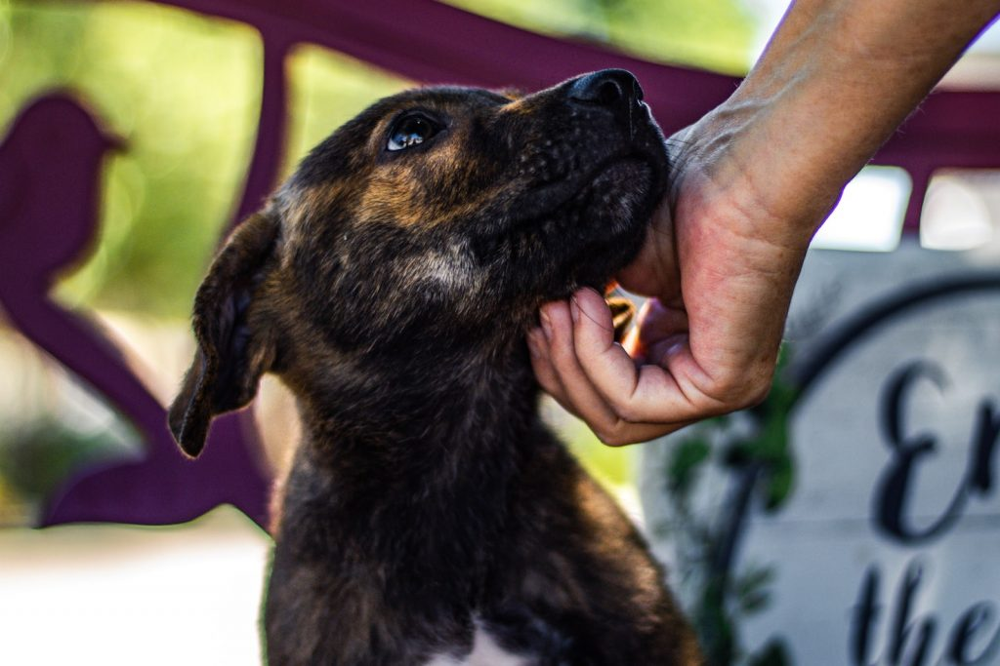
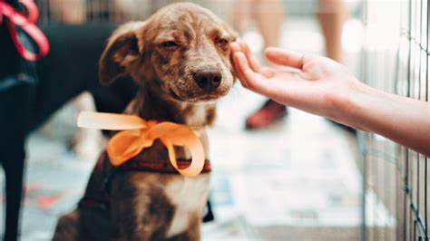

Cuando das en adopción, no solo estás buscando un nuevo hogar para tu mascota, sino que también tienes la responsabilidad de asegurarte de que será recibida por personas comprometidas con su bienestar. Es importante evaluar a los adoptantes, asegurarse de que cuentan con el espacio, el tiempo y los recursos necesarios, y, si es posible, hacer un seguimiento para verificar que la adaptación sea positiva.

Evitar regalar mascotas sin un proceso adecuado es clave para prevenir el abandono. Una adopción responsable implica transparencia, entrega de la mascota con sus vacunas y esterilización al día, y garantizar que su nueva familia comprenda el compromiso que conlleva tener un animal en casa.

Si por alguna razón no puedes seguir cuidando a tu mascota, considera buscar ayuda en organizaciones de adopción y refugios, quienes pueden orientarte para encontrarle el hogar ideal. Dar en adopción es un acto de amor cuando se hace de manera consciente y responsable. 💕🐶🐱
